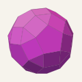

An independent technical audit by David Ryan. Draft 1, 2026‑10‑08.
Confirmed subject to stated assumptions. The audit found no mathematical gap in the projection reduction, symmetry reduction, zoom lemma or finite cover.
Bence Hervay's computer-assisted proof states that the 60-vertex rhombicosidodecahedron is Nopert: no congruent copy passes through a straight tunnel cut through it. This audit reviewed the mathematical reduction, reproduced both supplied checkers, regenerated the complete certificate byte for byte, and checked the second Rust implementation of the zoom covers.
The audit drafts are published in a separate GitHub repository. Each link opens that repository in a new tab.
| Draft | Date | Changes |
|---|---|---|
| Draft 1 | 2026‑10‑08 | First public audit, version 0.1.0 |